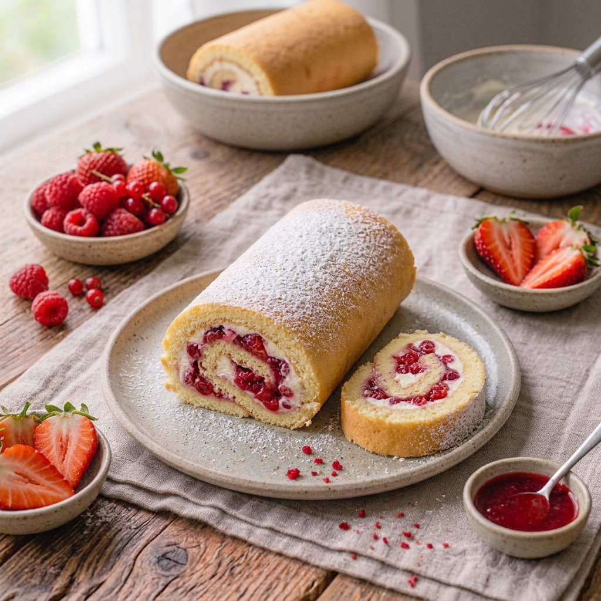

RECETA #029
Brazo Gitano de Frutos Rojos

Ingredientes — Bizcocho (8 porciones)
- 6 claras de huevo
- 1/4 taza de azúcar
- 6 piezas de yema de huevo
- 2 cucharadas de esencia de vainilla
- 1/2 taza de harina de trigo
- 1/4 taza de azúcar
- 1 colorante vegetal morado
- 1 colorante vegetal rojo
Relleno
- 10 hojas de menta fresca para decorar
- 2 barras de mantequilla a temperatura ambiente
- 2 paquetes de queso crema a temperatura ambiente
- 2 tazas de frutos rojos (fresas, cerezas, frambuesas o zarzamoras)
- 1 lata de leche condensada LA LECHERA®
Procedimiento
Precalienta el horno a 180 °C.
Para el bizcocho, bate las claras con 1/4 taza de azúcar hasta formar picos duros; aparte, bate las yemas con la vainilla y el azúcar restante hasta que el color sea más claro. Incorpora las claras, en forma envolvente, alternando con la harina previamente pasada por un colador. Divide la mezcla en 2 porciones, agrega a cada una un color diferente, viértelas en una charola forrada con papel encerado alternándolas entre sí y extiende para cubrir la superficie hasta que quede pareja.
Hornea a 180 °C por 10 minutos o hasta que esté ligeramente cocido. En una mesa coloca un trapo húmedo y sobre éste voltea el bizcocho. Enrolla con el trapo húmedo mientras esté caliente.
Para el relleno, bate el queso con la mantequilla hasta acremar, agrega la leche condensada LA LECHERA® y continúa batiendo hasta integrar. Coloca un poco de la mezcla anterior sobre el bizcocho previamente desenrollado, agrega frutos rojos, enrolla con ayuda del trapo y corta las puntas.
Refrigera durante 20 minutos y ofrece.
Al agregar el colorante a la masa recuerda mezclar de forma envolvente para evitar que pierda aire y el bizcocho quede apelmazado y seco.
Tiempo de preparación: 60 minutos.